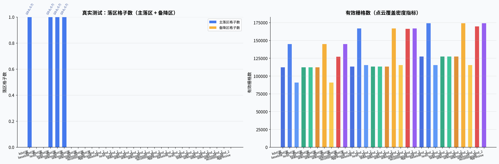
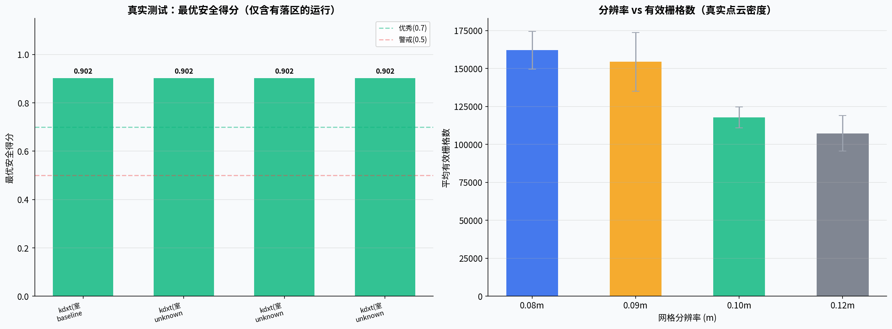
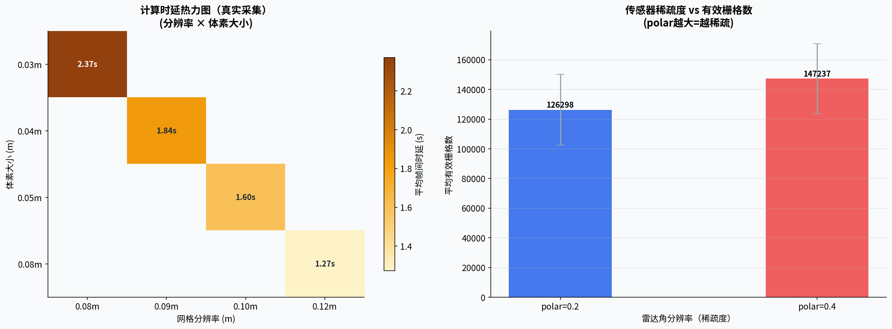
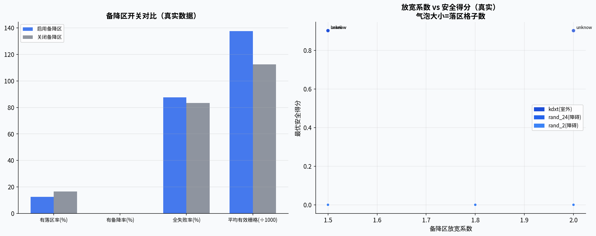
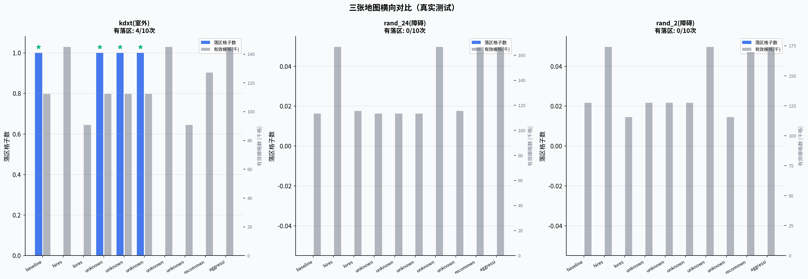
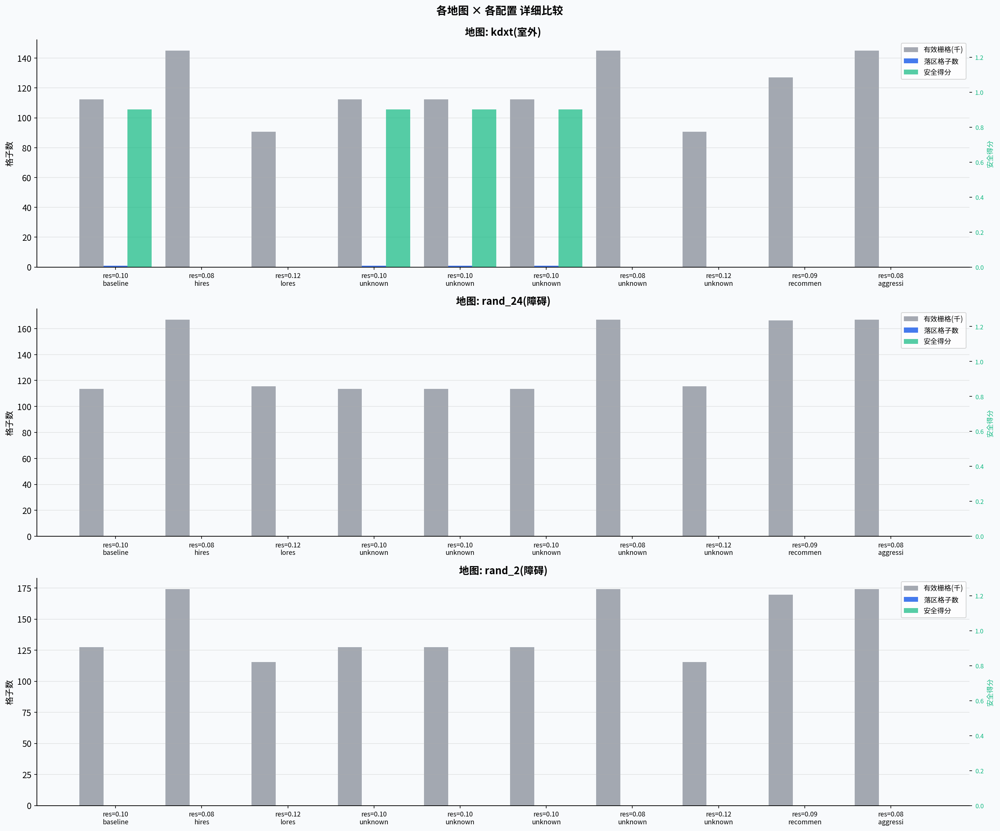
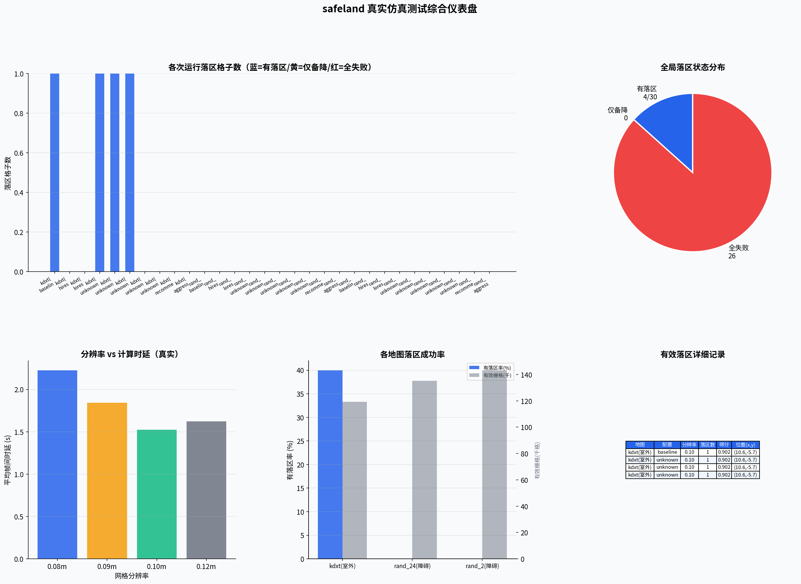

生成时间：2026-06-15 | 总运行次数：30 | 有效落区次数：4 | 全失败次数：26
| 地图 | 配置 | 分辨率 | 体素 | 雷达 | 放宽/备降 | 落区数 | 备降数 | 有效栅格 | 安全得分 | 落点坐标 | 时延 |
|---|---|---|---|---|---|---|---|---|---|---|---|
| kdxt(室外) | baseline | 0.10m | 0.05m | 0.2 | 1.5 / true | 1 | 0 | 112,266 | 0.902 | (10.6,-5.7) | — |
| kdxt(室外) | hires | 0.08m | 0.03m | 0.2 | 1.5 / true | 0 | 0 | 145,064 | — | — | — |
| kdxt(室外) | lores | 0.12m | 0.08m | 0.2 | 1.5 / true | 0 | 0 | 90,758 | — | — | 2.52s |
| kdxt(室外) | unknown | 0.10m | 0.05m | 0.4 | 1.5 / true | 1 | 0 | 112,266 | 0.902 | (10.6,-5.7) | — |
| kdxt(室外) | unknown | 0.10m | 0.05m | 0.2 | 1.5 / false | 1 | 0 | 112,266 | 0.902 | (10.6,-5.7) | — |
| kdxt(室外) | unknown | 0.10m | 0.05m | 0.2 | 2.0 / true | 1 | 0 | 112,266 | 0.902 | (10.6,-5.7) | — |
| kdxt(室外) | unknown | 0.08m | 0.03m | 0.4 | 1.5 / true | 0 | 0 | 145,064 | — | — | — |
| kdxt(室外) | unknown | 0.12m | 0.08m | 0.2 | 1.5 / false | 0 | 0 | 90,758 | — | — | 2.72s |
| kdxt(室外) | recommended | 0.09m | 0.04m | 0.2 | 1.8 / true | 0 | 0 | 127,156 | — | — | — |
| kdxt(室外) | aggressive | 0.08m | 0.03m | 0.4 | 2.0 / true | 0 | 0 | 145,064 | — | — | — |
| rand_24(障碍) | baseline | 0.10m | 0.05m | 0.2 | 1.5 / true | 0 | 0 | 113,422 | — | — | 1.44s |
| rand_24(障碍) | hires | 0.08m | 0.03m | 0.2 | 1.5 / true | 0 | 0 | 166,760 | — | — | 2.03s |
| rand_24(障碍) | lores | 0.12m | 0.08m | 0.2 | 1.5 / true | 0 | 0 | 115,540 | — | — | 1.03s |
| rand_24(障碍) | unknown | 0.10m | 0.05m | 0.4 | 1.5 / true | 0 | 0 | 113,422 | — | — | 1.43s |
| rand_24(障碍) | unknown | 0.10m | 0.05m | 0.2 | 1.5 / false | 0 | 0 | 113,422 | — | — | 1.42s |
| rand_24(障碍) | unknown | 0.10m | 0.05m | 0.2 | 2.0 / true | 0 | 0 | 113,422 | — | — | 1.43s |
| rand_24(障碍) | unknown | 0.08m | 0.03m | 0.4 | 1.5 / true | 0 | 0 | 166,760 | — | — | 2.04s |
| rand_24(障碍) | unknown | 0.12m | 0.08m | 0.2 | 1.5 / false | 0 | 0 | 115,540 | — | — | 1.01s |
| rand_24(障碍) | recommended | 0.09m | 0.04m | 0.2 | 1.8 / true | 0 | 0 | 166,416 | — | — | 1.63s |
| rand_24(障碍) | aggressive | 0.08m | 0.03m | 0.4 | 2.0 / true | 0 | 0 | 166,760 | — | — | 2.01s |
| rand_2(障碍) | baseline | 0.10m | 0.05m | 0.2 | 1.5 / true | 0 | 0 | 127,434 | — | — | 1.62s |
| rand_2(障碍) | hires | 0.08m | 0.03m | 0.2 | 1.5 / true | 0 | 0 | 174,183 | — | — | 2.43s |
| rand_2(障碍) | lores | 0.12m | 0.08m | 0.2 | 1.5 / true | 0 | 0 | 115,505 | — | — | 1.22s |
| rand_2(障碍) | unknown | 0.10m | 0.05m | 0.4 | 1.5 / true | 0 | 0 | 127,434 | — | — | 1.62s |
| rand_2(障碍) | unknown | 0.10m | 0.05m | 0.2 | 1.5 / false | 0 | 0 | 127,434 | — | — | 1.62s |
| rand_2(障碍) | unknown | 0.10m | 0.05m | 0.2 | 2.0 / true | 0 | 0 | 127,434 | — | — | 1.61s |
| rand_2(障碍) | unknown | 0.08m | 0.03m | 0.4 | 1.5 / true | 0 | 0 | 174,183 | — | — | 2.42s |
| rand_2(障碍) | unknown | 0.12m | 0.08m | 0.2 | 1.5 / false | 0 | 0 | 115,505 | — | — | 1.23s |
| rand_2(障碍) | recommended | 0.09m | 0.04m | 0.2 | 1.8 / true | 0 | 0 | 169,703 | — | — | 2.05s |
| rand_2(障碍) | aggressive | 0.08m | 0.03m | 0.4 | 2.0 / true | 0 | 0 | 174,183 | — | — | 2.42s |






